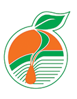

تأمین محصولات
دسترسی به محصولات و نهادههای منتخب کشاورزی با اطلاعات روشن و قابل پیگیری.

باریشهمراه مطمئن کشاورزیدسترسی آسان به محصولات و نهادههای کشاورزی، همراه با مشاوره و پشتیبانی تخصصی.
محصول موردنظرتان را جستجو و برای دریافت اطلاعات یا ثبت درخواست انتخاب کنید.
دسترسی به محصولات و نهادههای منتخب کشاورزی با اطلاعات روشن و قابل پیگیری.
امکان ثبت پرسش و درخواست تماس برای دریافت راهنمایی متناسب با نیاز شما.
ثبت سبد خرید و مشاهده وضعیت آن در حساب کاربری نمایشی سایت.
باریش با تمرکز بر ارائه محصولات و راهکارهای کشاورزی، تلاش میکند مسیر دسترسی مشتریان به اطلاعات، خدمات و محصولات موردنیاز را سادهتر کند.
این وبسایت در نسخه فعلی یک پیشنمایش فرانتاند است؛ اطلاعات و عملیات در مرورگر همین دستگاه ذخیره میشوند و هنوز به سامانه فروش یا پایگاه داده متصل نیستند.
پیام خود را برای تیم باریش ثبت کنید.